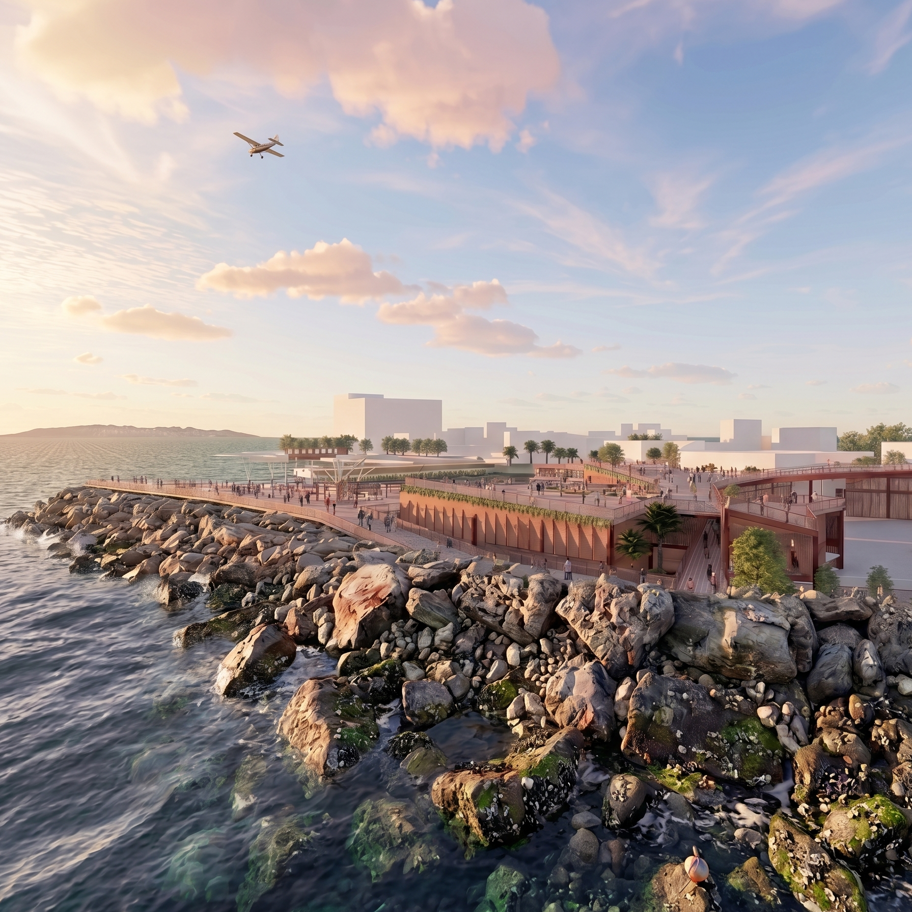
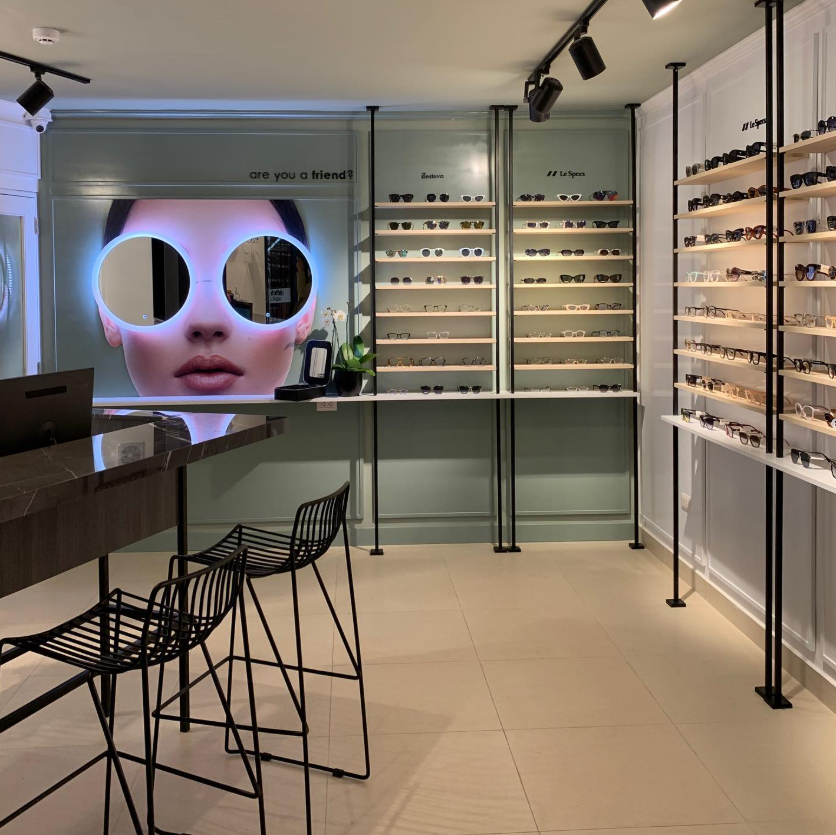
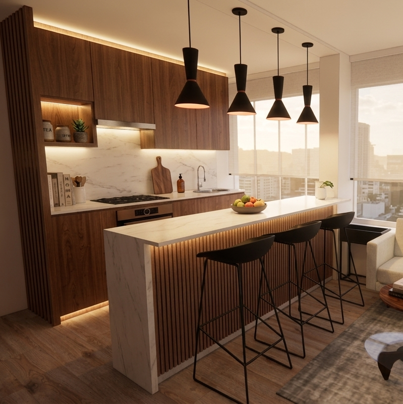

Maria Angela
Maldonado
Fuentes
Diseño, restauración y gestión integral de obra. Una arquitectura contextual, sostenible y humana.
Más sobre mi(images/hero-maria-angela.jpg)
01 · Tesis de titulación
D. P. A.
Proyecto de tesis desarrollado en colaboración con Paul Cruz, asesorado por Karen Takano. La propuesta reestructura un puerto pesquero clave del sur del Perú, integrando desarrollo urbano, frente marítimo y vida comunitaria.
Ver proyecto
D.P.A. — IMAGEN PRINCIPAL(images/dpa-cover.jpg)
02 · Proyecto retail
TFOP
Co-diseño e implementación de la óptica boutique The Friend of Pablo: desarrollo de identidad espacial, gestión de obra y supervisión. Una propuesta minimalista con paleta verde salvia que destaca el producto como pieza de exhibición.
Ver proyecto
TFOP — IMAGEN PRINCIPAL(images/tfop-render-01.jpg)
03 · Proyecto residencial
DPTO U
Diseño, implementación y gestión de obra de un departamento existente. Reorganización de planta, integración de cocina y sala, carpintería a medida y selección de materiales con foco en calidez, claridad y funcionalidad.
Ver proyecto
DPTO U — IMAGEN PRINCIPAL(images/dpto-u-render-01.jpg)
04 · Proyecto residencial
Terraza Manrique
Implementación y gestión de una terraza-comedor con zona de parrilla, jardines verticales y pérgola. Un espacio exterior pensado para reunir, equilibrando arquitectura, vegetación y sombra natural.
Ver proyecto